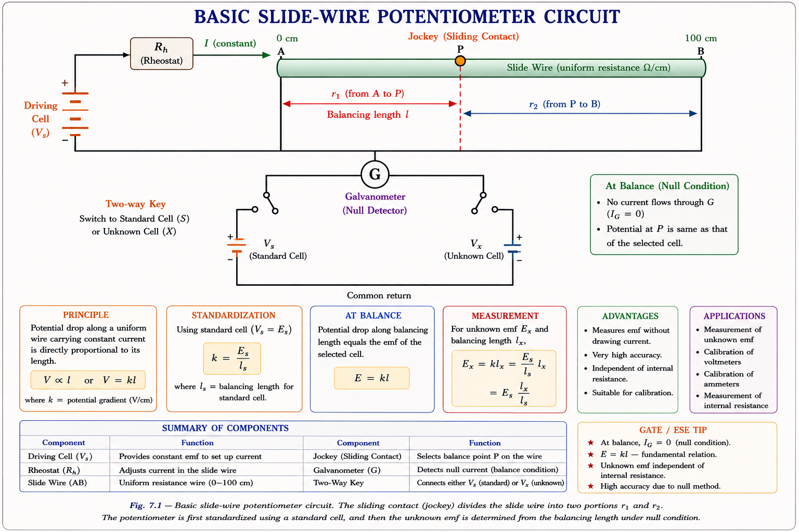
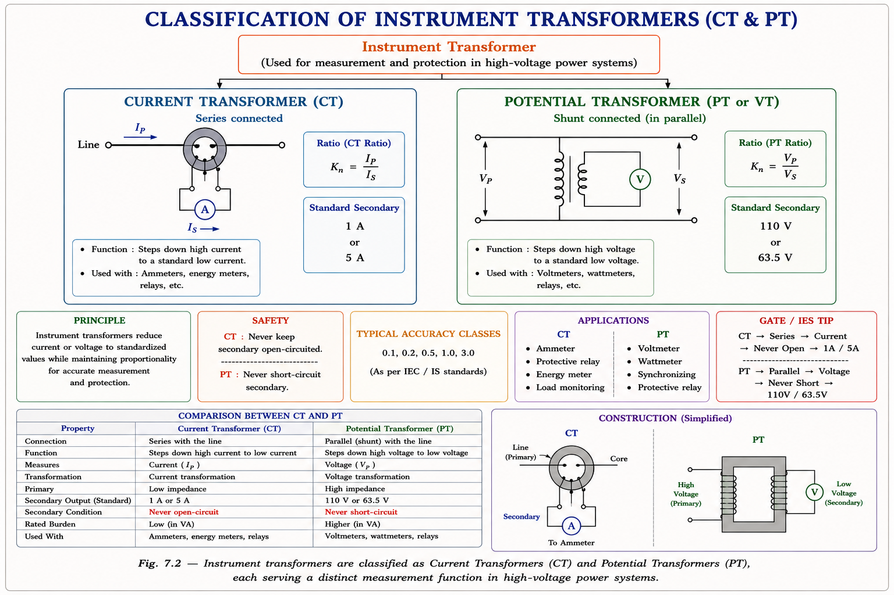
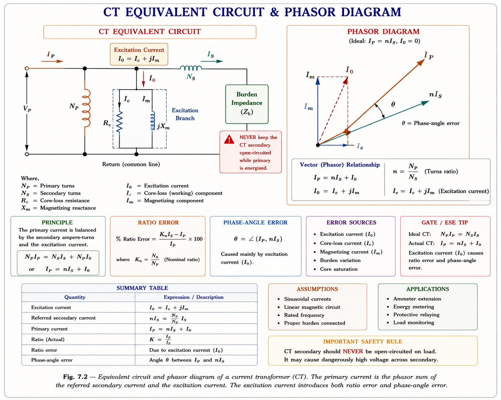
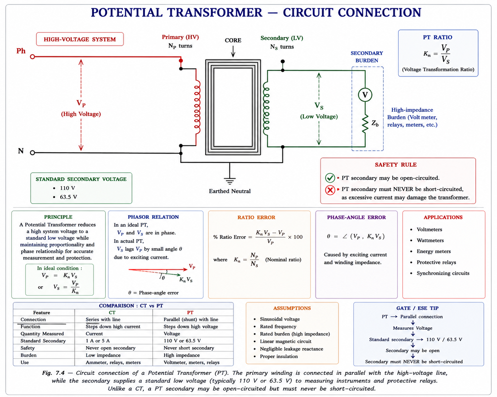

A complete conceptual and exam-oriented guide to potentiometers, current transformers (CT), and potential transformers (PT) — covering working principles, error analysis, ratio correction, and GATE/IES previous-year concepts — derived from standard textbooks by Golding & Widdis, Golding & Nakra, and A.K. Sawhney.
Every measuring instrument — whether an ammeter, voltmeter, or wattmeter — carries its own internal resistance and draws current from the circuit it is measuring. This loading effect introduces a systematic error: the very act of measurement disturbs the quantity being measured. For calibration-grade work, laboratory standards, and protection relay settings, this error is entirely unacceptable.[1]
Two elegant solutions emerge from classical electrical metrology: the potentiometer (a null-balance voltage comparator) and the instrument transformer (a precision scaling device). Both share a key philosophy — measure without disturbing. The potentiometer achieves this by drawing zero current at balance; the instrument transformer achieves it by scaling large voltages and currents to safe, measurable levels while isolating the high-voltage circuit from the instrument.[2]
A null or balance measurement is fundamentally more accurate than a deflection measurement. At balance, the galvanometer reads zero — meaning no current flows in the unknown branch. The measurement then depends only on the ratio of known resistances and a stable reference voltage, not on any instrument characteristic.
A potentiometer is a null-balance instrument that measures an unknown EMF by comparing it against a known, adjustable voltage drop across a calibrated resistance wire. The galvanometer in the detector branch deflects when these two voltages differ; at balance, the galvanometer reads zero — meaning no current flows through the unknown source — making the measurement independent of the source's internal resistance.[1]
Imagine a perfectly level see-saw. You place an unknown weight on one side and adjust calibrated weights on the other until the plank is perfectly horizontal — at which point you read off the calibrated side. You never need to know the spring constant or friction of the pivot. The potentiometer works identically: the "unknown weight" is the unknown EMF, the "calibrated weights" are the known voltage drop \(I_w \cdot \ell \cdot r\), and "balance" is when the galvanometer reads zero.

Fig. 1.1 — Basic slide-wire potentiometer circuit. The sliding contact divides the wire into two portions: ℓ₁ for standardisation against V_s and ℓ₂ for measurement of V_x.
Original diagram · Aarova AI · Derived from: Golding & Widdis [1], Sawhney [2]
Consider the slide wire of total length \(\ell\) with uniform resistance per centimetre \(r\) (Ω/cm). The working current \(I_w\) flows through the entire wire and is set by the rheostat \(R_h\) and the battery voltage \(V_B\):
At the standardisation position, the sliding contact is at length \(\ell_1\) from the zero end such that the voltage drop equals the known standard cell voltage \(V_S\):
Once the working current is fixed (rheostat locked), the contact is moved to position \(\ell_2\) for the unknown EMF \(V_x\):
Dividing equation (2) by (1) eliminates \(I_w\) and \(r\):
The unknown EMF depends only on the ratio of lengths ℓ₂/ℓ₁ and the known standard cell voltage V_S. It is completely independent of the working current I_w, the resistance per unit length r, or the battery voltage — as long as standardisation is done first and the rheostat is not disturbed.
Standardisation is the process of adjusting the working current \(I_w\) with the rheostat so that the voltage drop across the length \(\ell_1\) exactly equals the standard cell voltage \(V_S\). The Weston Standard Cell has an EMF of approximately \(1.0186\,\text{V}\) at 20°C and is used as the primary reference.[1]
Once standardisation is complete, the rheostat must NOT be touched. Any change in R_h alters I_w, which destroys the calibration. If the battery EMF drifts, re-standardisation is necessary. The standardisation process converts the slide wire from a wire of arbitrary resistance into a voltage scale in centimetres.
| Aspect | Standardisation | Calibration (Measurement) |
|---|---|---|
| Purpose | Set working current I_w | Measure unknown EMF \(V_x\) |
| Reference | Standard cell \(V_S\) (1.0186 V) | Standardised slide-wire scale |
| Wire length used | \(\ell_1\) (fixed, known) | \(\ell_2\) (found by balancing) |
| Galvanometer at balance | Current = 0 | Current = 0 |
| Equation | \(V_S = I_w \cdot \ell_1 \cdot r\) | \(V_x = I_w \cdot \ell_2 \cdot r\) |
| Rheostat action | Adjusted until balance | Locked — do not touch |
To calibrate an ammeter carrying current I, a precision shunt of known resistance R_sh is connected in series. The potentiometer measures the voltage V = I·R_sh across the shunt. Then I = V/R_sh gives the true current, which is compared to the ammeter reading. No current is drawn from the shunt branch at potentiometer balance — giving a true open-circuit reading of V.
In power systems, voltages can be as high as 400 kV and currents as large as several thousand amperes. Connecting conventional measuring instruments directly to such circuits would be dangerous, impractical, and would destroy the instruments. Instrument transformers (ITs) step down these quantities to standard, manageable levels — 110 V for voltage and 1 A or 5 A for current — that ordinary instruments can safely handle.[2]

Fig. 1.2 — Instrument transformers are classified into Current Transformers (CT) and Potential Transformers (PT), each serving a distinct measurement function in high-voltage power systems.
| Property | Current Transformer (CT) | Potential Transformer (PT) |
|---|---|---|
| Connection | Series with load (primary) | Parallel with load (shunt) |
| Primary carries | Full load current \(I_P\) | Full line voltage \(V_P\) |
| Secondary delivers | Rated 1 A or 5 A | Standard 110 V or 120 V |
| Secondary must be | Short-circuited (via ammeter) | Open-circuited (via voltmeter) |
| Nameplate ratio | \(I_P / I_S\) (current ratio) | \(V_P / V_S\) (voltage ratio) |
| Core type | Ring / toroidal (circular strip wound) | Shell (low V) or Core (high V) |
A CT steps down current — it has more secondary turns than primary. So for CT, \(n = N_S/N_P > 1\), and the ideal relationship is \(I_P \cdot N_P = I_S \cdot N_S \rightarrow I_P/I_S = N_S/N_P = n\). A PT steps down voltage — it has more primary turns. So for PT, \(n = N_P/N_S > 1\), and \(V_P/V_S = N_P/N_S = n\). Both obey the same physics, just with different winding configurations.
In practice, the transformation ratio \(R\) differs from the nominal ratio \(k_n\) due to the excitation current drawn by the core. The Ratio Correction Factor (RCF) accounts for this deviation:[2]
When k_n > R, the ratio error is positive — meaning the actual secondary output is more than the nominal would suggest (the instrument reads high for CT; low for PT). When k_n < R, the ratio error is negative. For GATE problems, always compute (k_n − R)/R × 100 and note the sign.
A Current Transformer has its primary winding connected in series with the power circuit whose current is to be measured. It is therefore also called a series transformer. The primary may be just a single conductor passing through the toroidal core (a "bar primary" with N_P = 1 turn) for very large line currents.[3]

Fig. 1.3 — CT equivalent circuit (left) and phasor diagram (right). I₀ = magnetising + loss component decomposes into I_m (magnetising, causes phase error) and I_e (iron-loss, causes ratio error). The primary current I_P is the phasor sum of n·I_S and I₀.
Original diagram · Aarova AI · Derived from: Sawhney [2], Nagrath & Kothari [3]
If the secondary of an energised CT is open-circuited, the secondary current \(I_S\) drops to zero. But the primary current (load current) is fixed by the power system — it continues to flow through \(N_P\) turns. With no opposing MMF from the secondary, the entire primary MMF \((I_P \cdot N_P)\) is available to drive the core into deep saturation. This generates a very high secondary EMF — potentially thousands of volts — which can cause fatal electric shock to personnel and insulation breakdown. Always short-circuit the CT secondary before disconnecting an ammeter.
In normal operation: Primary MMF ≈ Secondary MMF → \(I_P \cdot N_P \approx I_S \cdot N_S\). The core flux is small (set by the difference \(I_0 \cdot N_P\)). When secondary is open: \(I_S = 0\), so the full \(I_P \cdot N_P\) drives the core. Core flux saturates → highly non-sinusoidal flux → steep \(d\Phi/dt\) → very high induced EMF = \(N_S \cdot d\Phi/dt\). This is the danger.
Both errors in a CT arise from the excitation current \(I_0\). In an ideal CT, \(I_0 = 0\), so \(I_P = n \cdot I_S\) exactly. In practice, the core needs a magnetising current \(I_m\) to establish flux and a loss current \(I_e\) to supply iron losses. These shift the actual transformation ratio from the ideal and introduce a phase difference between primary and secondary current phasors.[2,3]
Since the load power factor angle \(\delta \approx 0\) for most burden conditions, and simplifying:
Where \(I_e = I_0 \sin\alpha\) is the iron-loss (in-phase) component of excitation current, and \(\alpha\) is the angle of \(I_0\) with the magnetising axis.
Ratio error is caused by the iron-loss component I_e (in phase with n·I_S). It makes R differ from n. Phase angle error θ is caused by the magnetising component I_m (90° ahead of n·I_S for a resistive burden). Both together constitute the total error due to the excitation current I₀.
The phase angle error \(\theta\) is the angle between the reversed secondary current phasor \(-n \cdot I_S\) and the primary current phasor \(I_P\). In an ideal CT, \(\theta = 0\) (the primary and reversed secondary phasors are co-linear).[2]
For small angles and neglecting second-order terms (standard approximation used in GATE):
A Potential Transformer (also called a Voltage Transformer or VT) connects its primary winding in parallel with the line voltage to be measured. It is essentially a step-down transformer with a highly accurate turns ratio, designed so that the secondary voltage is a precise fraction of the primary voltage.[2]
The standard secondary voltage is 110 V in most countries (120 V in some). This standardisation means that voltmeters, wattmeters, and protective relays can all be designed for 110 V irrespective of the system voltage (11 kV, 33 kV, 132 kV, 400 kV).

Fig. 1.4 — Potential Transformer connection. Primary is in shunt (parallel) with the high-voltage line. Secondary feeds a high-impedance voltmeter. Unlike CT, the PT secondary must remain open-circuited (high impedance load).
Original diagram · Aarova AI · Derived from: Golding & Widdis [1], Sawhney [2]
The PT has ratio error and phase angle error for the same fundamental reason as the CT — the excitation current. However, because the PT secondary burden is a high-impedance voltmeter (small secondary current), the error magnitudes in a well-designed PT are typically smaller than in a CT of equivalent rating.[2]
Where \(\Delta\) is the angle between the secondary terminal voltage and the applied primary voltage, \(R_P\) and \(X_P\) are the primary resistance and reactance referred to the primary side, \(n_1\) is the secondary current referred to primary, and \(I_e\), \(I_m\) are the iron-loss and magnetising components of excitation current.
For a PT operating at near unity power factor burden (small \(\Delta\)):
The burden of an instrument transformer is the impedance (or apparent power in VA) connected to its secondary terminals. For a CT, the burden is the ammeter + lead resistance. For a PT, it is the voltmeter + connecting lead impedance. Larger burden → larger secondary current → larger errors. GATE frequently asks: "The output of a CT is called ___" → Answer: Burden.
For system voltages exceeding 100 kV, electromagnetic PTs become uneconomical due to insulation cost and size. A Capacitive Voltage Transformer (CVT) uses a capacitor divider to step down the voltage to an intermediate level (typically 10–15 kV), which is then further stepped down by a conventional electromagnetic VT. CVTs are standard in 220 kV and 400 kV substations across India.[3]
At potentiometer balance, the galvanometer reads zero. This means no current flows from the unknown EMF source into the galvanometer branch. Therefore, the internal resistance of the unknown source does NOT affect the reading. This is why a potentiometer gives the true open-circuit EMF — unlike a voltmeter which draws current and gives a slightly lower reading due to internal resistance loading.
Key formula: \(V_x = V_S \cdot \dfrac{\ell_2}{\ell_1}\). The measurement depends only on length ratios and the standard cell voltage, not on working current or wire resistance.
Approach: Since both standardisation and measurement use the same working current \(I_w\):
\(V_x = V_S \times \dfrac{\ell_2}{\ell_1} \Rightarrow \ell_2 = \ell_1 \times \dfrac{V_x}{V_S} = 101.8 \times \dfrac{1.5}{1.018} \approx 150 \text{ cm}\)
Note: The internal resistance r = 2 Ω is a distractor — at balance, no current flows through r, so it has no effect on the result.
One of the most frequently tested concepts: Why must a CT secondary never be open-circuited? When secondary is open, \(I_S = 0\). The full primary MMF \((I_P \cdot N_P)\) drives the core into saturation. The flux becomes highly non-sinusoidal with large peaks. The rate of change \(d\Phi/dt\) creates very high induced EMF in the secondary (\(V = N_S \cdot d\Phi/dt\) → thousands of volts). This is a safety hazard and will destroy insulation.
Contrast with PT: The PT secondary should always carry a high-impedance load — short-circuiting a PT secondary causes excessive secondary current and potential damage to the PT.
Solution:
Transformation ratio: \(R = \dfrac{I_P}{I_S} = \dfrac{200}{1.01} = 198.02\)
Nominal ratio: \(k_n = 200/1 = 200\)
% Ratio error \(= \dfrac{k_n - R}{R} \times 100 = \dfrac{200 - 198.02}{198.02} \times 100 \approx +1.0\%\)
Answer: Ratio error is due to the iron-loss component \(I_e\) (in-phase with the secondary current referred to primary). Phase angle error is due to the magnetising component \(I_m\) (in quadrature with \(n \cdot I_S\)).
Both components together form the excitation current \(I_0 = I_m + jI_e\). Mnemonics: "e for error in ratio" and "m for misdirects the phase".
\(R = V_P / V_S = 1000/99 = 10.10\) ; \(k_n = 1000/100 = 10\)
% Ratio error \(= \dfrac{k_n - R}{R} \times 100 = \dfrac{10 - 10.10}{10.10} \times 100 \approx -0.99\%\)
Negative sign means R > k_n → PT secondary is giving less voltage than rated → instrument reads low.
Students often write \(n = N_S/N_P\) for both. Correct: For CT, \(n = N_S/N_P\) (secondary has more turns → steps down current). For PT, \(n = N_P/N_S\) (primary has more turns → steps down voltage). Always think about the physical action: CT multiplies turns to reduce current; PT multiplies primary turns to reduce voltage.
The source internal resistance r has NO effect on potentiometer measurement at balance. At balance, galvanometer current = 0, so no current flows through r, no voltage drop across r, and the full open-circuit EMF appears across the slide wire. Many GATE problems include r as a deliberate distractor.
The standard formula is \(\%\text{ Ratio Error} = \frac{k_n - R}{R} \times 100\), NOT \(\frac{R - k_n}{R}\). If \(k_n > R\), ratio error is positive (secondary current/voltage is higher than nominal → instrument reads high for CT current or high for PT voltage). Always follow the textbook convention to get the correct sign.
CT secondary: MUST be short-circuited (via ammeter) — open circuit is DANGEROUS. PT secondary: MUST be open-circuited (via high-R voltmeter) — short circuit causes excessive current and damage. Opposite rules! Remember: C for CT = short-Circuit; P for PT = oPen-circuit.
For CT, the burden is the impedance of the ammeter + leads on the secondary — typically small (ammeter has very low resistance). For PT, the burden is the impedance of the voltmeter + leads — typically large (voltmeter has high resistance). Larger burden in both cases increases errors. The "output" of a CT is called its burden (frequently asked in IES).
\(V_x = V_S \cdot \dfrac{\ell_2}{\ell_1}\). At balance: \(I_{\text{galv}} = 0\). Internal resistance has no effect. Standardise first with Weston cell (1.0186 V). Lock rheostat after standardisation.
\(R = n + \frac{I_e}{I_S}\). Caused by iron-loss component \(I_e\). \(\%\text{Error} = \frac{k_n - R}{R} \times 100\). Reduce by: high-grade core, low burden, extra turns compensation.
\(\theta \approx \frac{I_m}{n I_S}\) radians. Caused by magnetising component \(I_m\). Reduce by: high-permeability core, resistive burden, low leakage reactance winding.
Ratio error: \(\%\sigma = \frac{k_n - R}{R} \times 100\). Phase angle error \(\beta\) in radians. Errors smaller than CT. Not suitable above 100 kV → use CVT. Standard output: 110 V.
CT secondary: always short-circuit via ammeter. Never open-circuit an energised CT. PT secondary: always open-circuit (high-R voltmeter). Never short-circuit a PT secondary.
\(\text{RCF} = R / k_n\). Burden = secondary VA loading. CT output is called burden. Higher burden → larger errors in both CT and PT. Standard CT outputs: 1 A or 5 A.
| Formula | Quantity | GATE Probability |
|---|---|---|
| \(V_x = V_S \cdot \ell_2 / \ell_1\) | Potentiometer unknown EMF | 🟢 High |
| \(I_w = V_B / (R_h + \ell \cdot r)\) | Potentiometer working current | 🟡 Medium |
| \(R = n + I_e/I_S\) | CT transformation ratio | 🟢 High |
| \(\theta = I_m/(nI_S)\) rad | CT phase angle error | 🟢 High |
| \(\% \text{RE} = (k_n - R)/R \times 100\) | % Ratio error (CT or PT) | 🟢 High |
| \(\text{RCF} = R/k_n\) | Ratio correction factor | 🟡 Medium |
| \(n_{\text{CT}} = N_S/N_P\) ; \(n_{\text{PT}} = N_P/N_S\) | Turns ratio definition | 🟢 High |
| \(V_{\text{PT secondary}} = 110\,\text{V}\) std. | PT standard output | 🟡 Medium |
| \(\text{CVT for } V > 100\,\text{kV}\) | Capacitive VT threshold | 🔴 Low–Med |
Ask a concept question, request a derivation, or get help with a numerical problem on this chapter.
Measurement of Resistance — Wheatstone Bridge, Kelvin Double Bridge, Megger, Earth resistance measurement, sensitivity and galvanometer theory, Carey Foster bridge, and all GATE/IES concepts on resistance measurement methods.
All technical content is derived from the following standard textbooks. All explanations, derivations, and diagrams in this document are original to Aarova AI and are not reproductions of any copyrighted material.